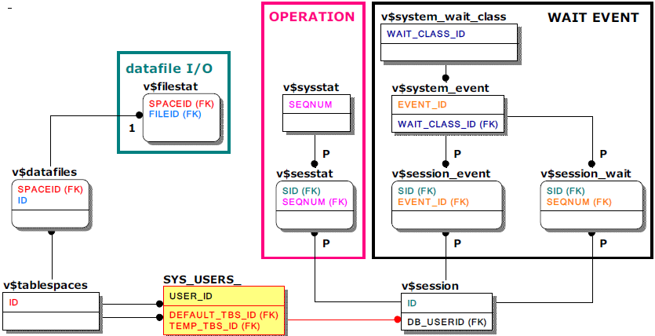

Various statistical information can be checked through the Performance View, such as statistics information on wait events and operations at the DBMS level, session level, and query level, disk tablespace data file I/O at DBMS level, and memory usage buffer pool statistics, etc.
Standards for generating statistical information vary depending on the level.
Information is accumulated from the start of the Altibase server and initialized when Altibase is shut down. Therefore, in order to know the value of a specific period, (current value - value at the start of measurement) must be calculated for all column values.
Session Level Statistics
The related session is maintained while connected.
Query Level Statistics
It is maintained only for one query that was executed last at the end of each session and multiple prepared queries, and it disappears when the related session ends. Statistics at the query level are provided through the v$
It should be noted that since the TIMED_STATISTICS property must be activated(1), it is necessary to check whether the property is activated. The default value of TIMED_STATISTICS is disabled(0).
The TIMED_STATISTICS property has been provided since Altibase 5. The user can check whether or not this property is activated with the following sentence.
SELECT NAME, VALUE1 FROM V$PROPERTY WHERE NAME = 'TIMED_STATISTICS';
Most of the performance views related to statistical information can be monitored by the view itself, so no join is necessary, but in the case of statistical information about I/O of data files in the wait event, operation, and disk tablespace. It is necessary to check by associating with a specific session or data file.
In order to obtain related information, the relationship between the meta table and performance view in which only the key columns to be referenced in the join query is referenced is as follows.

Performance View related to Waiting Event
The waiting event means a series of waiting jobs of 'session' or 'Altibase threads'. For example, a thread called a service thread is waiting to acquire a latch of a page to access a page loaded in a disk buffer, and waiting to acquire a latch of a log buffer to write a log.
For reference, Altibase classifies wait events into 8 types using the upper concept, the wait event class.
v$system_wait_class
Statistical information about waiting events of 'Session' or 'Altibase thread' is shown for each 'Waiting Event Class'. It is accumulated statistical information after Altibase startup, and is initialized when shutdown.
v$system_event
Statistical information on waiting events of 'Session' or 'Altibase thread' is displayed for each 'Waiting Event'. It is accumulated statistical information after Altibase startup, and is initialized when shutdown.
v$session_event
Statistical information is displayed only for the wait event of the 'session'. When the session ends, the related statistical information disappears.
v$session_wait
Statistical information displayed only for the wait event of the 'activated session' at the time of inquiry among 'session'. When the session is idle or terminated, the related statistical information disappears.
Performance View related to Operation
Operation refers to the various operation performed by 'session' or 'Altibase thread'. For example, performing a query of a specific session and writing a redo log of a service thread.
v$sysstat
Statistical information for the operation of 'session' or 'Altibase thread' is shown for each 'operation'. It is accumulated statistical information after Altibase startup, and is initialized when shutdown.
v$sesstat
Statistical information is displayed only for the 'session' operation. When the session closes, the related statistical information disappears.
Data File I/O
v$filestat
Shows I/O statistics information for each data file in the disk tablespace.
Other Main Performance Views
The performance views that provide other statistical information are as follows.
Since the performance view itself provides meaningful statistical information, there is no need to join with other performance views.
v$memstat
This is a performance view that shows the memory usage currently used by Altibase for each module, and is a key reference indicator when the memory usage of the Altibase server process is abnormal.
The MAX_TOTAL_SIZE column, which means the largest memory usage of the module, is maintained from the start of Altibase and initialized when Altibase is shut down.
v$buffpool_stat
When performing a query, it displays real-time statistics related to buffer pool such as 'hit ratio', which means the ratio of reusing an existing page in the buffer pool without reading pages from disk.
v$lfg
As a performance view related to redo log files, one specific column is the main monitoring target.
The LF_PREPARE_WAIT_COUNT column indicates the number of times the service thread has waited because the next redo log file has not yet been created when attempting to switch from the current redo log file to a new redo log file. It this value is large, change the value of the PREPARE_LOG_FILE_COUNT property to a large value and apply it (restart the Altibase server) to create a sufficient number of redo log files in advance.
It is initialized when the Altibase is shut down in a cumulative and summed form from the time the Altibase is started.
{kind=link}